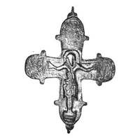

Catalog › CE-1019 · KOR2003-III.1.1.45
Valvă de față de cruce-encolpion cu capete rotunjite, Răstignire cu gravură, sfinți gravați în niello
sec. a doua jumătate XII (1151–1200) · Sudak, Crimeea, Ucraina · Rezervația Națională „Sofia Kievului” (NZSK), Kiev, inv. ВХ-1366 (СК-81/190)
single valve of a reliquary cross, aramă; c. a doua jumătate XII (1151–1200); found at Sudak, Crimeea, Ucraina; kept at Rezervația Națională „Sofia Kievului” (NZSK), Kiev.


Identificare
- Categorie
- Valvă izolată
- Material
- Aramă
- Tehnică
- Turnare în relief; Gravare (incizie); Niello
- Dimensiuni
- Î 80 × L 68 mm
Iconografie
- Avers
- Sfinți militari; Sf. Ioan
- Descriere avers
- Valvă de față a unei cruci-encolpion cu capete rotunjite. Balamalele sunt rupte; pe alocuri, pe brațul de jos, există pierderi pe margine, dinspre interior, din cauza coroziunii metalului. Interiorul valvei are o adâncitură care repetă imaginea reliefată. În centru imaginea reliefată a Răstignirii, completată cu gravură. Deasupra capului lui Hristos, într-un medalion oval cu o ieșitură dreptunghiulară în jos, imaginea gravată în niello a Sf. Gheorghe (?) cu sabie; la stânga lui Hristos Maica Domnului, la dreapta Sf. Ioan Teologul, tot în gravură cu niello. Marginea capătului de jos și încrucișarea sunt ornate cu contur adâncit și crestături. Ieșiturile „lacrimă” aveau în centru puncte în niello. Nielloul s-a păstrat pe alocuri.
- Inscripții
- М...; Н[?]Н
- Limba
- Greacă
Datare și atribuire
- Datare
- sec. a doua jumătate XII (1151–1200)
- Centru
- Necunoscut
- Tipologie
- Korzukhina–Peskova 2003, tip III 1 1
Descoperire
- Localitate
- Sudak
- Regiune
- Crimeea
- Țară
- Ucraina
- Context
- Fortificație
- Anul
- 1981
Păstrare și referințe
- Colecție
- Rezervația Națională „Sofia Kievului” (NZSK), Kiev
- Nr. inventar
- ВХ-1366 (СК-81/190)
- Bibliografie
- G. F. Korzukhina, A. A. Peskova, Древнерусские энколпионы. Нагрудные кресты-реликварии XI–XIII вв., Sankt-Petersburg, 2003 [Korzukhina–Peskova 2003], p. 107, cat. nr. III 1 1/45, reprodusă la Табл. 57 (planșe, p. 299).
- Figura
- Табл. 57
- Planșe
- Korzukhina–Peskova 2003, Табл. 57 (planșă fără paginație proprie în PDF; p. 299 tipărită)
- Observații
- Datare după Peskova: sec. a doua jumătate XII. Circumstanțe: Săpături I. A. Baranov, 1981, în cetatea Sudak. Inscripții adâncite pe un rând sub mâinile lui Hristos: la stânga М (restul literelor nu se citește), la dreapta Н[?]Н (o literă nu se citește). Credit: E. I. Arhipova, foto NZ „SK”. Coordonate: nu sunt date în sursă.
Citare: Corpus Encolpiorum, CE-1019, Valvă de față de cruce-encolpion cu capete rotunjite, Răstignire cu gravură, sfinți gravați în niello, --root/piese/KOR2003-III.1.1.45/ (accesat 2026-10-17).